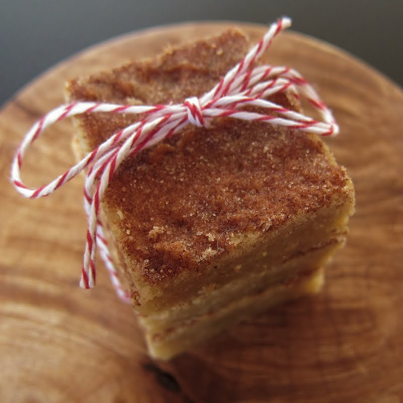

Home
Apple Cider Blondies

Description
Dense, chewy, soft, fudgy, and with a caramel apple cider flavor—these apple cider blondies are everything! They do take a little time to make, but they're worth the effort.
Ingredients
- 3 cups apple cider
- 3/4 cup unsalted butter
- 1/4 cup plus 2 tablespoons white sugar, divided
- 1 teaspoon ground cinnamon, divided
- 1 cup firmly packed brown sugar
- 3/4 teaspoon kosher salt
- 1/8 teaspoon ground nutmeg
- 1/8 teaspoon ground allspice
- 1 large egg, at room temperature
- 1 large egg yolk
- 1 1/2 teaspoons vanilla extract
- 1 1/2 cups all-purpose flour
- 1 tablespoon cornstarch
- 1/2 teaspoon baking soda
Directions
- Pour apple cider into a large heavy-bottomed saucepan. Place over medium-high heat and cook, stirring occasionally, until cider has reduced to 1/3 cup, 20 to 30 minutes. Stir mixture more frequently as it gets more reduced and syrupy, in order to prevent burning. Pour reduced cider into a large bowl.
- Add butter carefully to the same saucepan to avoid sputtering. Place pan back over medium heat, and cook, stirring constantly, until butter smells nutty and little browned bits begin to form on the bottom of the pan, 5 to 7 minutes. (There will be browned chunks of reduced apple cider in the butter as it cooks—you can ignore these. You are looking for little browned bits to form on the bottom of the pan that you have to scrape up with a wooden spoon). Immediately pour browned butter into the bowl with reduced cider. Whisk to combine. Set aside to cool for about 15 minutes.
- Preheat the oven to 350 degrees F (180 degrees C). Line a 9x9-inch square pan with enough parchment paper to have overhang on all sides.
- For topping, stir the 2 tablespoons white sugar and 1/2 teaspoon cinnamon together in a small bowl. Set aside until needed.
- Add remaining 1/4 cup white sugar, remaining 1/2 teaspoon cinnamon, brown sugar, salt, nutmeg, and allspice to cooled cider mixture. Whisk until combined. Mixture will be thick. Add egg, egg yolk, and vanilla and whisk until completely smooth. Add flour, cornstarch, and baking soda and whisk until combined.
- Pour batter into the prepared pan and spread into an even layer. Sprinkle topping mixture evenly over the top.
- Bake in the preheated oven until the edges of the bars are browned, and the center is puffed and beginning to crack slightly, 30 to 35 minutes. Bars will puff and then deflate when cooling. Cool completely in the pan.
- Remove bars using the parchment overhang and cut into 16 bars. Store extras in an airtight container.